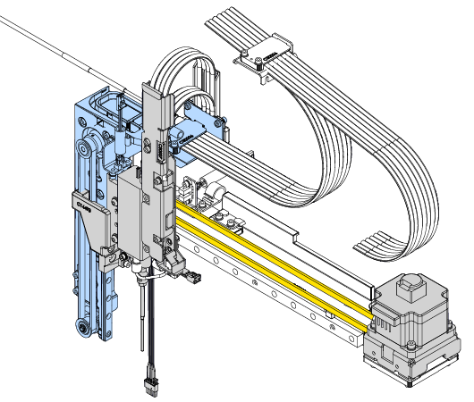
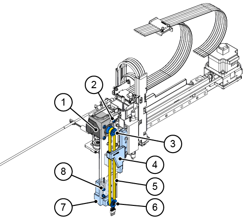
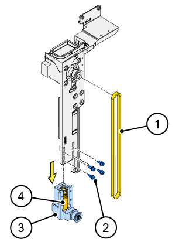
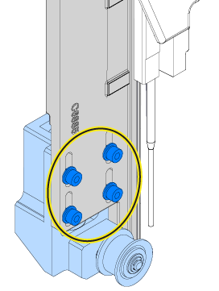
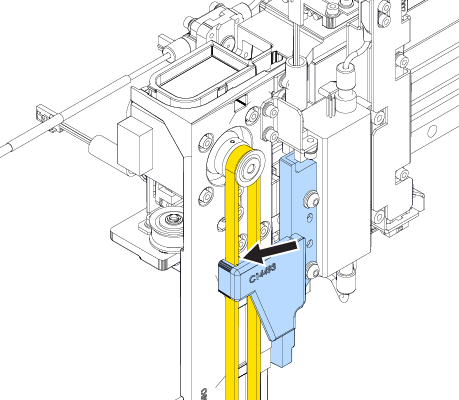
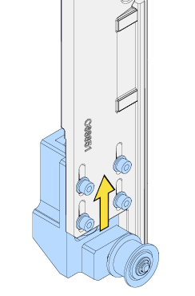

Replacing the Z-axis Belt Tensioner
This topic includes information about how to replace the Z-axis belt tensioner for the reagent pipettor.
Safety Reminder
Servicing the DxI 9000 instrument involves potential risks for pinch and puncture, electrical shock, and exposure to hazardous materials. You must mitigate these risks by taking appropriate countermeasures. See Safety for more information.
| Table of Contents |
|---|
| Illustrations |
| Recommended Tools |
| Replacing the Z-axis Belt Tensioner |
| Alignments |
| Verification |
Illustrations
The following illustrations show the components you will work with in this procedure.


| 1 | Z-axis motor |
| 2 | Z-axis motor screw (1 of 4) |
| 3 | Z-axis pulley |
| 4 | Transducer bracket |
| 5 | Z-axis belt |
| 6 | Z-axis tensioner pulley |
| 7 | Z-axis belt tensioner |
| 8 | Z-axis tensioner screw (1 of 4) |

| 1 | Z-axis belt |
| 2 | Z-axis belt tensioner screws |
| 3 | Z-axis belt tensioner |
| 4 | tensioner spring |
Recommended Tools
- 2mm hex driver
Replacing the Z-axis Belt Tensioner
Perform this procedure to replace the Z-axis belt tensioner for the reagent pipettor.
- Turn off the instrument to prevent damaging the instrument. See Turning Off the Instrument for more information.
- Open the front cover panels and the rear panels.
- Gently pull the reagent pipettor assembly to the front of the instrument.
- Use a 2mm hex driver to loosen the four screws that attach the Z-axis belt tensioner to the Z-axis frame.
Note: Do not remove the screws.

- Press the Z-axis belt inward to free it from the transducer bracket.

- Press and hold the belt tensioner upward to release the belt's tension.

- Remove the belt from the tensioner pulley.
- Remove the four screws that attach the belt tensioner to the Z-axis frame.
Note: Do not drop the screws into the reagent storage compartment.
- Remove and discard the belt tensioner from the Z-axis frame.
Note: Do not drop the tensioner spring into the reagent storage compartment.
- Position the new belt tensioner onto the Z-axis frame. Be sure the spring is straight so that it will apply tension to the belt.
- Use the screws to secure the belt tensioner in place, but do not fully tighten them.
- Press and hold the belt tensioner upward to install the belt onto the tensioner pulley.
- Release the belt tensioner and allow it to auto-tension the belt.
- Tighten the bottom screws to secure the belt tensioner.
- Tighten the top screws to secure the belt tensioner.
- Be sure the belt grooves are aligned to the pulleys.
- Rotate the belt to verify the belt is aligned and straight.
- Turn on the instrument. See Turning On the Instrument for more information.
Alignments
Align the reagent pipettor. See Adjusting and Aligning the Reagent Pipettor for more information.
Verification
Complete the verification of service repair. See Verification of Service Repairs for more information.